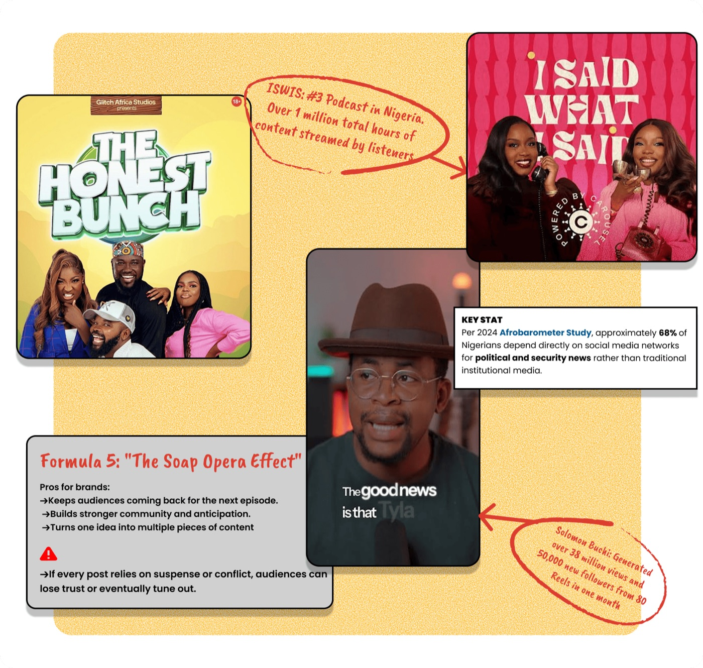
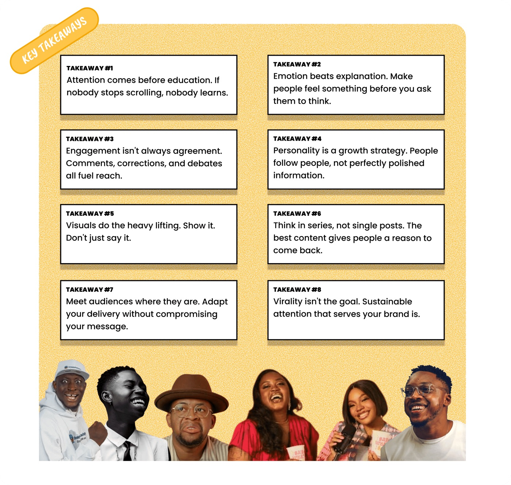

I should have sent this last week, but I was away with the team planning an event for the TGM Academy.
The event was an absolute blast. In case you missed it, grab the full gist here.
In July, we explored Part One of the Olodo Formula and shared four crucial formulas that creators use to trigger emotional responses, connect with audiences, and go viral.
In Nigeria, success has often meant speaking perfect English and having several university degrees. Olodo content turns this idea on its head, as young, uneducated, or intentionally clueless creators attract millions of viewers and earn significant wealth.
By doing so, these Olodo creators have been able to create a strong community for themselves that comprises the vast majority of Nigerians who feel a sense of connection and relatability to them.
Now to today’s class.
Formula 4: Keep It Hyper-Visual
The average modern internet user has an attention span of less than 48 seconds.
And the most viral creators use constant jump cuts, loud sound effects, visual memes flashing on screen and exaggerated edits to accommodate this reality.
The new rule of digital PR post-2020 is: keep it moving. Never static. Use animations, videos, memes, stickers, moving fonts. There should be a visual representation of whatever you are saying.
This technique forces the "brain-rot"- accustomed eye to stay on the video long enough to digest the actual content.
Best fit for: Education, tech, healthcare creators, FMCG, media, agencies, and consumer brands.
Use with caution: Luxury brands, law firms, financial services, and brands built on minimalism or premium exclusivity.
Formula 5: "The Soap Opera Effect"

Truth is: sabi creators don't post isolated content. They build ongoing stories that people keep coming back for.
Think about the ISWIS podcast. Every episode sparks fresh debates, callbacks, reactions, and follow-up conversations across social media. One clip leads to another, then another, until the audience feels like they're part of an unfolding story instead of consuming one-off content.
Or take Solomon Buchi. Whether you agree with him or not, his relationship takes rarely end with a single post. Every opinion creates reactions, response videos, quote tweets, and follow-up discussions that keep his name in the conversation for days.
Best fit for: Creators, podcasts, entertainment, sports, fashion, beauty, reality-style brands, agencies, and founder-led businesses.
Use with caution: crisis communications, government, healthcare, legal, finance, and brands that can't afford unnecessary drama.

Final Thought
As marketers, brands, and creators, the lesson is clear: If you want to change what people consume, change how you package it.
After all, if Peller can crash the servers of Nigerian TikTok just by speaking terrible English, imagine what you could do for your brand if you actually started speaking the language of the internet.
So, are we going to keep judging the strategy, or are we finally going to learn how to play the game?
This article first appeared in That Good Scoop, our bi-weekly drop of fresh ideas on PR, branding, influencer marketing and growth.
Subscribe to That Good Scoop